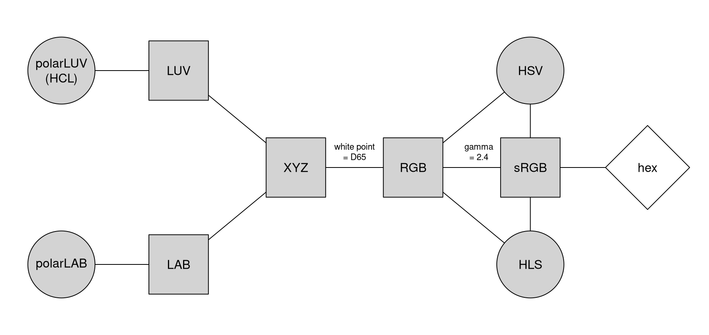
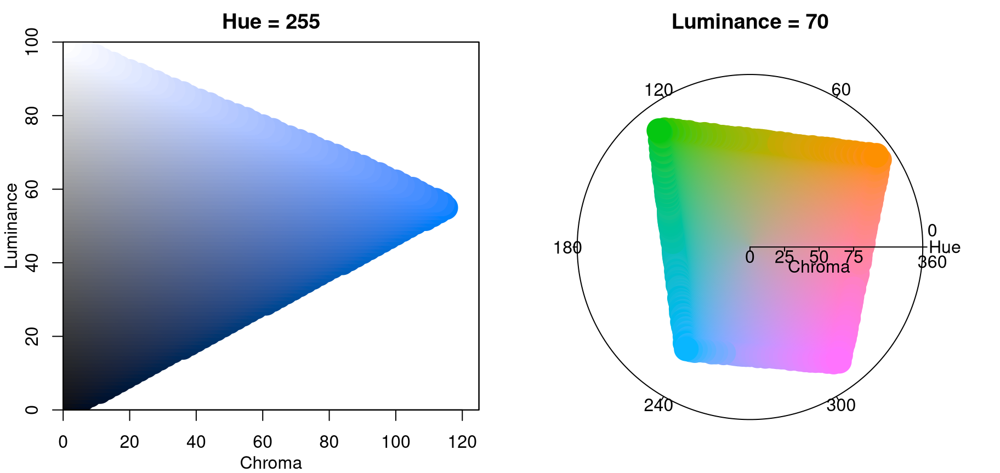

color_spaces.RmdAt the core of the colorspace package are various utilities for computing with color spaces (Wikipedia 2020d), as the name conveys. Thus, the package helps to map various three-dimensional representations of color to each other (Ihaka 2003). A particularly important mapping is the one from the perceptually-based and device-independent color model HCL (Hue-Chroma-Luminance) to standard Red-Green-Blue (sRGB) which is the basis for color specifications in many systems based on the corresponding hex codes (Wikipedia 2020i), e.g., in HTML but also in R. For completeness further standard color models are included as well in the package. Their connections are illustrated in the following graph:

Color models that are (or try to be) perceptually-based are displayed with circles and models that are not are displayed with rectangles. The corresponding classes and eponymous class constructors in colorspace are:
RGB() for the classic Red-Green-Blue color model, which
mixes three primary colors with different intensities to obtain a
spectrum of colors. The advantage of this color model is (or was) that
it corresponded to how computer and TV screens generated colors, hence
it was widely adopted and still is the basis for color specifications in
many systems. For example, hex color codes are employed in HTML but also
in R. However, the RGB model also has some important drawbacks: It does
not take into account the output device properties, it is not
perceptually uniform (a unit step within RGB does not produce a constant
perceptual change in color), and it is unintuitive for humans to specify
colors (say brown or pink) in this space. (See Wikipedia 2020g.)
sRGB() addresses the issue of device dependency by
adopting a so-called gamma correction. Therefore, the gamma-corrected
standard RGB (sRGB), as opposed to the linearized RGB above, is a good
model for specifying colors in software and for hardware. But it is
still unintuitive for humans to work directly with this color space.
Therefore, sRGB is a good place to end up in a color space manipulation
but it is not a good place to start. (See Wikipedia 2020h.)
HSV() is a simple transformation of either the sRGB or
the RGB space that tries to capture the perceptual axes: hue
(dominant wavelength, the type of color), saturation
(colorfulness), and value (brightness, i.e., light vs. dark).
Unfortunately, the three axes in the HSV model are confounded so that,
e.g., brightness changes dramatically with hue. (See Wikipedia
2020f.)
HLS() (Hue-Lightness-Saturation) is another
transformation of either sRGB or RGB that tries to capture the
perceptual axes. It does a somewhat better job but the dimensions are
still strongly confounded. (See Wikipedia 2020f.)
XYZ() was established by the CIE (Commission
Internationale de l’Eclairage) based on experiments with human subjects.
It provides a unique triplet of XYZ values, coding the standard
observer’s perception of the color. It is device-independent but it is
not perceptually uniform and the XYZ coordinates have no intuitive
meaning. (See Wikipedia 2020a.)
LUV() and LAB() were therefore proposed by
the CIE as perceptually uniform color spaces where the former is
typically preferred for emissive technologies (such as screens and
monitors) whereas the latter is usually preferred when working with dyes
and pigments. The L coordinate in both spaces has the same meaning and
captures luminance (light-dark contrasts). Both the U and V coordinates
as well as the A and B coordinates measure positions on red/green and
yellow/blue axes, respectively, albeit in somewhat different ways. While
this corresponds to how human color vision likely evolved (see the next
section), these two color models still not correspond to perceptual axes
that humans use to describe colors. (See also Wikipedia 2020c; Wikipedia 2020b.)
polarLUV() and polarLAB() therefore take
polar coordinates in the UV plane and AB plane, respectively.
Specifically, the polar coordinates of the LUV model are known as the
HCL (Hue-Chroma-Luminance) model (see Wikipedia 2020e, which points out that
the LAB-based polar coordinates are also sometimes referred to as
HCL). The HCL model captures the human perceptual axes very well
without confounding effects as in the HSV or HLS approaches. (More
details follow below.)All S4 classes for color spaces inherit from a virtual class
color which is internally always represented by matrices
with three columns (corresponding to the three dimensions).
Note that since the inception of the color space conversion tools in
(in , Ihaka
2003) other tools for this purpose became available, notably
grDevices::convertColor() (in
high-level , R Core Team 2020) and
farver::convert_colour() (in , Pedersen, Nicolae, and François
2020). For many basic color conversion purposes the
colorspace package and these alternatives are equally suitable.
Some details differ, though, and the color conversion tools in
colorspace are well-embedded into the remaining functionality
of the package and make it self-contained.
It has been hypothesized that human color vision has evolved in three distinct stages:
See Kaiser and Boynton (1996), Knoblauch (2002), Ihaka (2003), Lumley (2006), Zeileis, Hornik, and Murrell (2009) for more details and references. Thus, colors can be described using a 3-dimensional space:
However, for describing colors in such a space, it is more natural for humans to employ polar coordinates in the color plane (yellow/blue vs. green/red, visualized by the dashed circle above) plus a third light/dark axis. Hence, color models that attempt to capture these perceptual axes are also called perceptually-based color spaces. As already argued above, the HCL model captures these dimensions very well, calling them: hue, chroma, and luminance. The corresponding sRGB gamut, i.e., the HCL colors that can also be represented in sRGB, is visualized in the animation below (by Horvath and Lipka 2017).
The shape of the HCL space is a distorted double cone which is seen best by looking at vertical slices, i.e., chroma-luminance planes for given hues. For example, the left panel below depicts the chroma-luminance plane for a certain blue (hue = 255). Along with luminance the colors change from dark to light. With increasing chroma the colors become more colorful, where the highest chroma is possible for intermediate luminance.
As some colors are relatively dark (e.g., blue and red assume their maximum chroma for relatively low luminances) while others are relatively light (e.g., yellow and green), horizontal slices of hue-chroma planes for given hue have somewhat irregular shapes. The right panel below shows such a hue-chroma plane for moderately light colors (luminance = 70). At that luminance, green and orange can become much more colorful compared to blue or red.

Several utilities are available for working with the S4 classes implementing the color spaces listed above.
as() method: Convert a color object to the
various color spaces, e.g., as(x, "sRGB").coords(): Extract the three-dimensional coordinates
pertaining to the current color class.hex(): Convert a color object to sRGB and code in a hex
string that can be used within R plotting functions.hex2RGB(): Convert a given hex color string to an sRGB
color object which can also be coerced to other color spaces.readRGB() and readhex() can read text
files into color objects, either from RGB coordinates or hex color
strings.writehex(): Write hex color strings to a text
file.whitepoint(): Query and change the so-called white
point employed in conversions from CIE XYZ to RGB. Defaults to D65 that
has been specified by the CIE to approximate daylight.As an example a vector of colors x can be specified in
the HCL (or polar LUV) model:
## L C H
## [1,] 70 50 0
## [2,] 70 50 120
## [3,] 70 50 240The resulting three colors are pastel red (hue = 0), green (hue = 120), and blue (hue = 240) with moderate chroma and luminance. For display in other systems an sRGB representation might be needed:
(y <- as(x, "sRGB"))## R G B
## [1,] 0.8931564 0.5853740 0.6465459
## [2,] 0.5266113 0.7224335 0.4590469
## [3,] 0.4907804 0.6911937 0.8673877The displayed coordinates can also be extracted as numeric matrices
by coords(x) or coords(y). We can also, for
example, coerce from sRGB to HSV:
as(y, "HSV")## H S V
## [1,] 348.0750 0.3446008 0.8931564
## [2,] 104.6087 0.3645825 0.7224335
## [3,] 208.0707 0.4341857 0.8673877For display in many systems (including R itself) hex color codes based on the sRGB coordinates can be created:
hex(x)## [1] "#E495A5" "#86B875" "#7DB0DD"{kind=link}